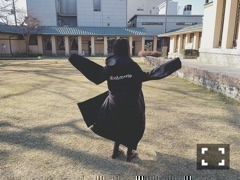

| 2016/06 27 Mon | 開放厳禁。722回目 |

幕張メッセでアルバム握手会でした！
ありがとうございました。
1部 今話したい誰かがいる
2部 別れ際、もっと好きになる
3部 太陽ノック
4部 不等号
5部 ポピパッパパー

分厚くて伸びのよい生地に
レースとオーガンジーとチュールを
いっぱい重ねてる不等号。かわいい！
衣装もっと注目されてほしい！
ポピパッパパーは4種類あるから
全部着たいな
次は7月10日だね！
最近よく万理華の笑ってるところ
好きってみんな言ってくれる。
いっぱい笑おう〜大爆笑したい〜
もうすぐ7月かあ
ダラダラしてないでまた外に出ようかな！
行動するかしないかの違いよ！！！
お知らせ！

さぬき映画祭で公開された、
メディコム・トイ設立20周年記念作品
映画『Anniversary アニバーサリー』が
10月22日から全国で順次公開されます。
5つのオムニバスストーリーの中の
ひとつに出演しています！
心温まる映画、たくさんの方に
観ていただきたいです。
そして、46時間TVで流した
『遥かなるブータン』MVが
公式YouTubeにて公開されました。
やったー！公式MVになった！←
みんなの素の表情やセムガエな笑顔が
とってもセムガエです（＾∇＾）
ストリートジャック発売中！
2ndアルバムについてのインタビューと
Hello meに出てます！
鼻ほじってるよ！
この2人とは別の雑誌でもグラビアしたけど
女だ！！ってなりました。フェロモン。
それと、8月5日に
乃木坂46セカンド写真集発売決定！
グアム〜

ある食堂にて
この文字のちょっとした違和感によって
怖くて開ける気にならないね（＾∇＾）
まりか
コメント(378)
2016/06/27 21:00